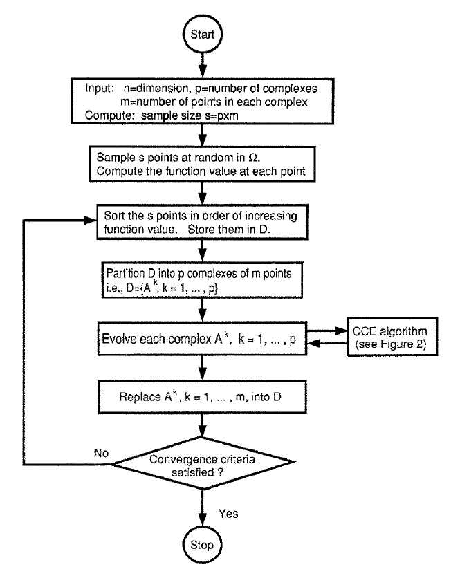
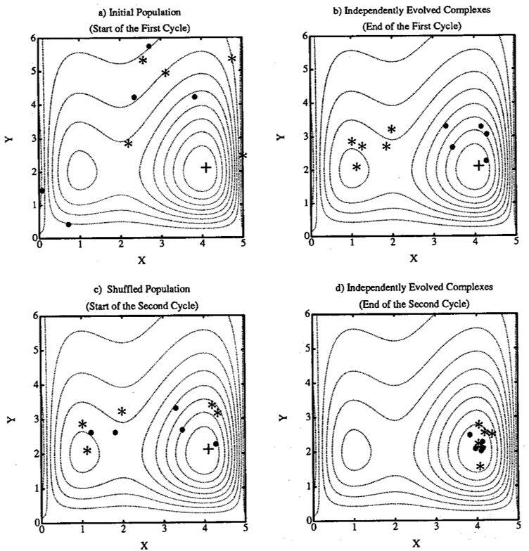
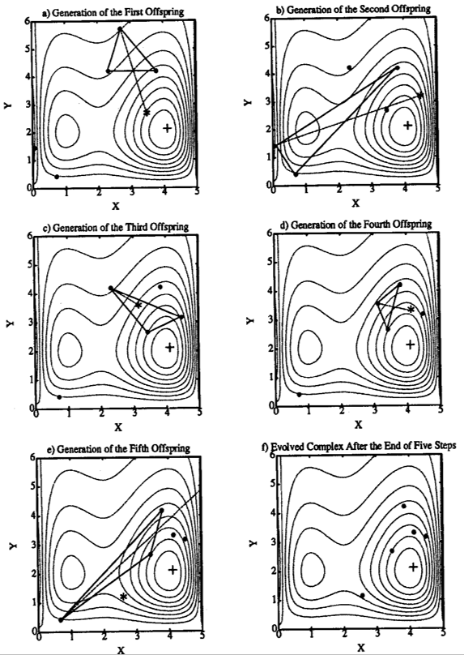
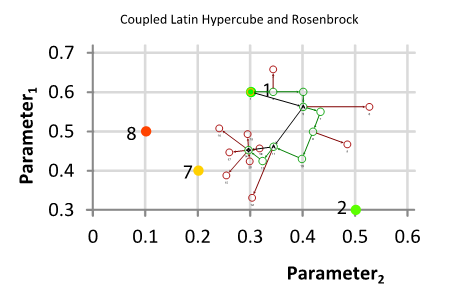
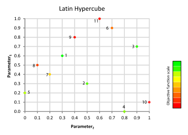
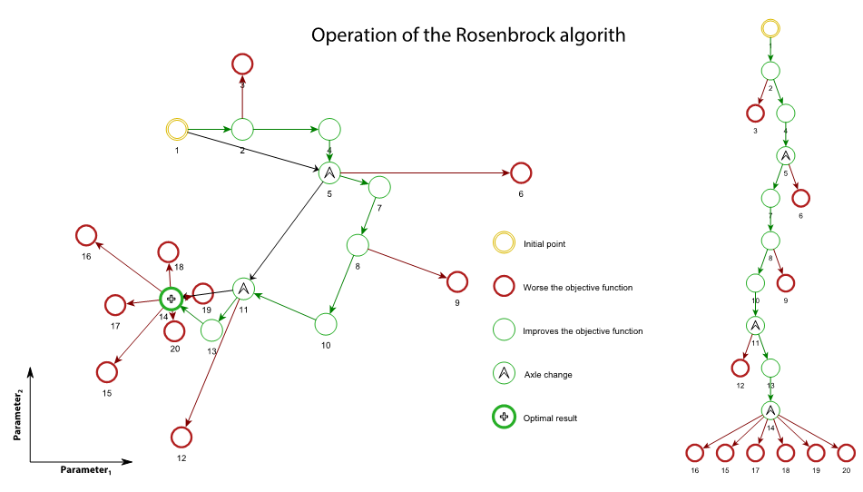

10.1 Introduction to the calibration module
The module Calibrator of the RS Expert frame has been implemented for calibrating the parameters of the hydrological model. This module uses an objective function defined by the user and different algorithms to solve it.
The first algorithm, the Shuffled Complex Evolution – University of Arizona (SCE-UA), is a global optimization method (Q. Duan, Sorooshian, and Gupta 1992; Q. Y. Duan, Gupta, and Sorooshian 1993) based on a synthesis of the best features from several existing algorithms, including the genetic algorithm, and introduces the concept of complex information exchange, so-called complex shuffling. The SCE-UA method was designed for solving problems encountered in conceptual watershed model calibration (Hapuarachchi, Li, and Wang 2001; Ajami et al. 2004; Muttil and Liong 2004; Blasone, Madsen, and Rosbjerg 2007), but has also been satisfyingly used in water resources management (Zhu, Wu, and Wu 2006; Lin, Cheng, and Lin 2008; Wang et al. 2010).
The second algorithm is a variation of the Adaptive Markov Chain Monte Carlo, used since it can be interesting for solving complex problems in high dimensional spaces (Gilks, Richardson, and Spiegelhalter 1995; Liu 2004). It has been modified to an Uniform Adaptative Monte Carlo (UAMC) in this program to adjust the solution space after a defined group of simulations up to the convergence of the optimization. Variations of the Monte Carlo method are usually used in hydrological problem for parameterization optimization (Vrugt et al. 2003; Jeremiah et al. 2012).
The third and last algorithm used in RS MINERVE is the Coupled Latin Hypercube and Rosenbrock (CLHR) It couples the Latin Hypercube algorithm (McKay, Beckman, and Conover 1979) with the Rosenbrock algorithm (Rosenbrock 1960), generating a powerful tool for optimization of complex problems. The latin hypercube algorithm has been usually used in hydrology for sampling the initial parameter space, combined the with other methods (Griensven et al. 2006; Kamali, Ponnambalam, and Soulis 2013). Rosenbrock algorithm has been also used for hydrological parameters optimisation (Abbott and Refsgaard 1996) or optimization of numerical functions (Kang, Li, and Ma 2011).
10.2 Objective function
A flexible objective function (\(OF\)) has been developed for the module of calibration aiming to be adapted to the user’s requirements. The indicators presented in Section 9 are used in this OF, each one weighted with a value defined by the user (Table 10.1).
| Indicator | Weight | Range of Values | Ideal value |
|---|---|---|---|
| Nash | w1 | -∞ to 1 | 1 |
| Nash-ln | w2 | -∞ to 1 | 1 |
| Pearson Correlation Coefficient | w3 | -1 to 1 | 1 |
| Kling-Gupta Efficiency (KGE) | w4 | -∞ to 1 | 1 |
| Bias Score (BS) | w5 | -∞ to 1 | 1 |
| Relative Root Mean Square Error (RRMSE) | w6 | 0 to +∞ | 0 |
| Relative Volume Bias (RVB) | w7 | -∞ to +∞ | 0 |
| Normalized Peak Error (NPE) | w8 | -∞ to +∞ | 0 |
| Peirce Skill Score (PSS) | w9 | -1 to 1 | 1 |
| Overall Accuracy (OA) | w10 | 0 to 1 | 1 |
The \(OF\) is presented in Equation 10.1 and takes into account the ideal values of each indicator. Thus, the \(OF\) searches to maximize the first five and last two indicators (\(Nash\), \(Nash-ln\), \(Pearson\), \(Kling-Gupta\), \(BS\), \(PSS\) and \(OA\)) since their ideal value is equal to the maximum possible value and, at the same time, to minimize the value or the absolute value for the three other indicators (\(RRMSE\), \(RVB\), \(NPE\)) since their ideal value corresponds to zero.
\[ OF = max(Nash \cdot w_{1} + Nashln \cdot w_{2} + Pearson \cdot w_{3} + KGE \cdot w_{4} + BS \cdot w_{5} - RRMSE \cdot w_{6} - \left| RVB \cdot w_{7} \right| - \left| NPE \cdot w_{8} \right| + PSS \cdot w_{9} + OA \cdot w_{10}) \qquad(10.1)\]
10.3 Shuffled Complex Evoluation – University of Arizona
Model architecture
The Shuffled Complex Evolution – University of Arizona (SCE-UA) method was developed to obtain the traditional best parameter set and its underlying posterior distribution within a single optimization run. The goal is to find a single best parameter set in the feasible space. It starts with a random sample of points distributed throughout the feasible parameter space, and uses an adaptation of the Simplex Downhill search scheme (Nelder and Mead 1965) to continuously evolve the population toward better solutions in the search space, progressively relinquishing occupation of regions with lower posterior probability (Mariani et al. 2011).
A general description of the steps of the SCE-UA method is given below (Q. Duan, Sorooshian, and Gupta 1994) and illustrated in Figure 10.1.
Step 1
Generate sample: Sample \(NPT\) points in the feasible parameter space and compute the criterion value at each point. In the absence of prior information on the location of the global optimum, use a uniform probability distribution to generate a sample.
Step 2
Rank points: Sort the \(NPT\) points to increase criterion value so that the first point represents the point with the lowest criterion value and the last the one with the highest criterion value (assuming that the goal is to minimize the criterion value).
Step 3
Partition into complexes: Partition the \(NPT\) points into \(NGS\) complexes, each containing \(NPG\) points. The complexes are partitioned in such a way that the first complex contains every \(NGS \cdot (k-1)+1\) ranked point, the second complex contains every \(NGS \cdot (k-1)+2\) ranked point, and so on, where \(k = 1,2,...,NPG\).
Step 4
Evolve each complex: Evolve each complex independently by taking \(NSPL\) evolution steps, according to the Competitive Complex Evolution (CCE) algorithm. Figure 10.3 illustrates how each evolution step is taken.
Step 5
Shuffle complexes: Combine the points in the evolved complexes into a single sample population; sort the sample population in order of increasing criterion value; re-partition or shuffle the sample population into \(NGS\) complexes according to the procedure specified in the third step.
Step 6
Check convergence: If any of the pre-specified convergence criteria are satisfied, stop; otherwise, continue.
Step 7
Check complex number reduction: If \(MINGS\) (the minimum number of complexes) \(< NGS\), remove the complex with the lowest ranked points; set \(NGS=NGS-1\) and \(NPT=NGS \cdot NPG\); and return to Step 4. If \(MINGS=NGS\), return to Step 4.

The SCE-UA method is explained in Figure 10.2 and Figure 10.3 for a two dimensional case (Q. Duan, Sorooshian, and Gupta 1994). The contour lines in Figure 10.2 and Figure 10.3 represent a function surface having a global optimum located at (4,2) and a local optimum located at (1,2). Figure 10.2 (a) shows that a sample population containing \(NPT\) (=10) points is divided into \(NGS\) (=2) complexes. Each complex contains \(NPG\) (=5) points which are marked by • and * respectively. Figure 10.2 (b) shows the locations of the points in the two independently evolved complexes at the end of the first cycle of evolution. It can be seen that one complex (marked by *) is converging towards the local optimum, while the other (marked by •) is converging toward the global optimum. The two evolved complexes are shuffled according to Step 5. Figure 10.2 (c) displays the new membership of the two evolved complexes after shuffling.
Figure 10.2 (d) illustrates the two complexes at the end of the second cycle of evolution. It is clear that both complexes are now converging to the global optimum at the end of second cycle.

The CCE algorithm is graphically illustrated in Figure 10.3. The black dots (•) indicate the locations of the points in a complex before the evolution step is taken. A sub-complex containing \(NPS\) (=3, i.e. forms a triangle in this case) points is selected according to a pre-specified probability distribution to initiate an evolution step.
The probability distribution is specified such that the better points have a higher chance of being chosen to form the sub-complex than the worse points. The symbol (*) represents the new points generated by the evolution steps. There are three types of evolution steps: reflection, contraction and mutation.
Figure 10.3 (a), Figure 10.3 (b) and Figure 10.3 (d) illustrate the “reflection” step, which is implemented by reflecting the worst point in a sub-complex through the centroid of the other points. Since the reflected point has a lower criterion value than the worst point, the worst point is discarded and replaced by the new point. Thus an evolution step is completed.
In Figure 10.3 (c), the new point is generated by a “contraction” step (the new point lies half-way between the worst point and the centroid of the other points), after rejecting a reflection step for not improving the criterion value.
In Figure 10.3 (e), a “mutation” step is taken by random selection of a point in the feasible parameter space to replace the wrong point of the sub-complex. This is realized after a reflection step is attempted, but results in a wrong point, i.e. outside of the feasible parameter space. Another scenario in which a mutation step is taken is when both the reflection step and the contraction step do not improve the criterion value.
Finally, the Figure 10.3 (f) shows the final complex after \(NSPL\) (=5) evolution steps.

Algorithm parameters
Different parameters of the SCE-UA have to be defined by the user (Table 10.2), as presented hereafter, and other parameters are directly calculated by the process.
An initial set of \(Nopt\) parameters is given by the user or is assumed as random depending on the user’s needs and the used hydrological models. The other \(NPT-1\) points (or parameters sets) are randomly created by the algorithm, depending on a \(SEED\) value. The number of points \(NPG\) in each complex corresponds to \(2 \cdot Nopt+1\) and the number of points NPS in each sub-complex to \(Nopt+1\) (It has to be noted that each point corresponds to a set of parameters). The number of evolution steps allowed for each complex before complex shuffling, \(NSPL\), is equal to \(NPG\). The number of complexes is defined as \(NGS\), which is assumed equal to MINGS according to the Duan investigation. Then, the total number of points \(NPT\) in the entire sample population is \(NGS \cdot NPG\).
Three different convergence criteria are defined by the user:
The maximum number of function evaluations (or iterations) \(MAXN\).
The number of shuffling loops (\(KSTOP\)) in which the criterion value must change by a fixed percentage (\(PCENTO\)) before optimization is finished.
The \(PEPS\) parameter which provides a flag indicating whether parameter convergence is reached (it compares the value of \(PEPS\) with the normalized geometric mean of parameter ranges).
| Name | Units | Description | Default Value |
|---|---|---|---|
| MAXM | - | Maximum number of iterations | 10000 |
| NGS | - | Number of complexes | 3 |
| KSTOP | - | Number of shuffling loops | 10 |
| PCENTO | - | Criterion value on shuffling loops | 0.1 |
| PEPS | - | Convergence parameter | 0.001 |
| SEED | - | Seed value | Random |
10.4 Uniform Adaptive Monte Carlo
Model architecture
The Uniform Adaptive Monte Carlo (UAMC) algorithm is based on the Monte Carlo experiments that rely on repeated random sampling to obtain simulation results (Gilks, Richardson, and Spiegelhalter 1995; Liu 2004); but has been modified in order to iteratively adjust the solution space.
The algorithm randomly launches a collection of simulations (block) and finds the better results in the solution space. Afterwards, the solution space is adjusted and a new group of simulations starts. The process is repeated until the optimization converges to the best set of parameters (Figure 10.4).
Algorithm parameters
Different parameters of the UAMC algorithm have to be defined by the user (Table 10.3), as presented hereafter.
A number of iterations \(ITGR\) per group is defined for the optimization. Random values of parameters are used for each iteration of the group based on a \(SEED\) value. Once the first group of iterations is finished, a number \(NUMBEST\) of best values is applied for calculating the solutions space range for the next group of iterations. This solution space takes into account the minimum and the maximum values of each parameter providing the best values and adds an additional range \(COEFRANG\).
Finally, the optimization finishes when the convergence criterion (defined as \(ERR\)) is achieved, or when the maximum number of iterations \(MAXN\) is attained.
| Name | Units | Description | Default Value |
|---|---|---|---|
| MAXN | - | Maximum number of iterations | 2000 |
| ITGR | - | Number of iterations per group | 100 |
| NUMBEST | - | Number of best values taken into account for the next group calculation | 5 |
| COEFRANG | - | Additional range coefficient | 0.1 |
| ERR | - | Error difference until convergence | 0.001 |
| SEED | - | Seed value | Random |
10.5 Coupled Latin Hypercube and Rosenbrock
Model architecture
The Coupled Latin Hypercube (McKay, Beckman, and Conover 1979) and the Rosenbrock algorithm (Rosenbrock 1960), called hereafter CLHR, generates a powerful tool for optimization of complex problems. This combined algorithm can discretize a wide domain and then narrow your search to smaller sectors (Figure 10.5). Scanning of the space of possible solutions is performed by the Latin Hypercube. This algorithm allows pseudo-statistical sampling conditioned by the previous calculated solutions. The Latin hypercube is an evolution of Monte Carlo method, with more homogeneous samples achieved with fewer samples. An important advantage of this method is that the dimension of the problem is defined by the division of the latin hypercube and not by the number of parameters.
The best results from samples become the starting points required for Rosenbrock algorithm. The advantage of this subroutine calculation lies in the speed to obtain near optimal values. This algorithm is based on a gradient search, adjusting axis changes based on the direction of maximum enhancement, thus reducing the number of evaluations of the objective function.

A general description of the steps of the CLHR method is given below:
Step 1
Generate sample: Generation and evaluation of a pseudorandom sample by a Latin hypercube within the feasible parameter space. If the size of the hypercube is greater, uncertainty is reduced within the domain of search.
Step 2
Rank points: The results obtained in the first step are ordered (Figure 10.6). The best results from the Latin hypercube algorithm will serve as starting points to launch the Rosenbrock algorithm.

Step 3
Launch of Rosenbrock: Rosenbrock algorithm starts at least once. This subroutine searches around the starting point the values that improve the objective function. Depending on whether the objective function improves or worsens, the parameters values are changed to advance or backward.
Step 4
Axes change: Axes are changed to orient the Cartesian axes to the direction of maximum improvement. For applying this change of axes, it should have obtained worse results in all directions of search and at least an improvement in one of these directions (remember each direction has 2 ways).
Step 5
The best result of all Rosenbrock releases is stored.

Algorithm parameters
Number of tests with the latin hypercube algorithm is equal to the parameter \(DivLH\) (\(\geq 2\)).The \(SEED\) is responsible for generating the randomness of the sample.
The \(RLAUNCHES\) (\(1 \geq RLAUNCHES \leq DivLH\)) best results from the Latin Hypercube algorithm are used as starting points for the Rosenbrock algorithm.
The \(ALPHA\) coefficient represents the increment in the direction of search if the objective function improves. The \(BETA\) coefficient represents the movement if a worse result is obtained.
The \(STEPROS\) parameter indicates the subdivisions for each parameter’s range. It is used to calculate value variations in each of the parameters (\(∆_i\)) to be studied, as presented in Equation 10.2.
\[ \frac{MaxP{arameterValue}_{i} - Min{ParameterValue}_{i}}{STEPROS} = Delta_i \qquad(10.2)\]
The optimization finishes when the convergence criterion (defined as \(ERR\)) is achieved, or when the maximum number of iterations \(MAXN\) is attained.
| Name | Units | Description | Default Value |
|---|---|---|---|
| MAXN | - | Maximum number of iterations | 2000 |
| DivLH | - | Latin hypercube division | 50 |
| SEED | - | Seed value | Random |
| RLAUNCHES | - | Rosenbrock algorithm launches | 2 |
| ALPHA | - | Advance coefficient | 3 |
| BETA | - | Backward coefficient | -0.5 |
| STEPROS | - | Parameter range subdivision | 40 |
| ERR | - | Convergence parameter | 0.001 |